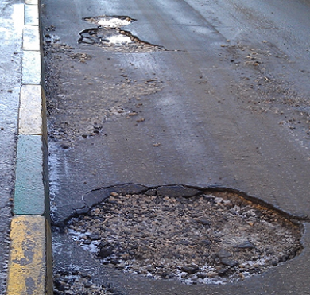
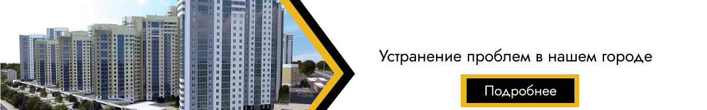
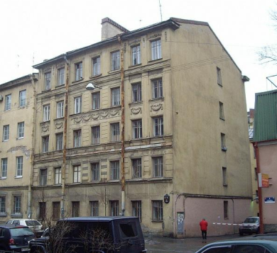

Сделаем лучше вместе!
Устранение проблем в нашем городе
+7 888 999 44 22
Сделаем лучше вместе!
Мои заявки
|  | Временная метка: 20.12.2003 |
|  |
|  | Временная метка: 18.12.2004 |


Выполнила: Русских Мария Васильевна
Группа: 1-ИС
Специальность:
09.02.07 Информационные системы и программирование